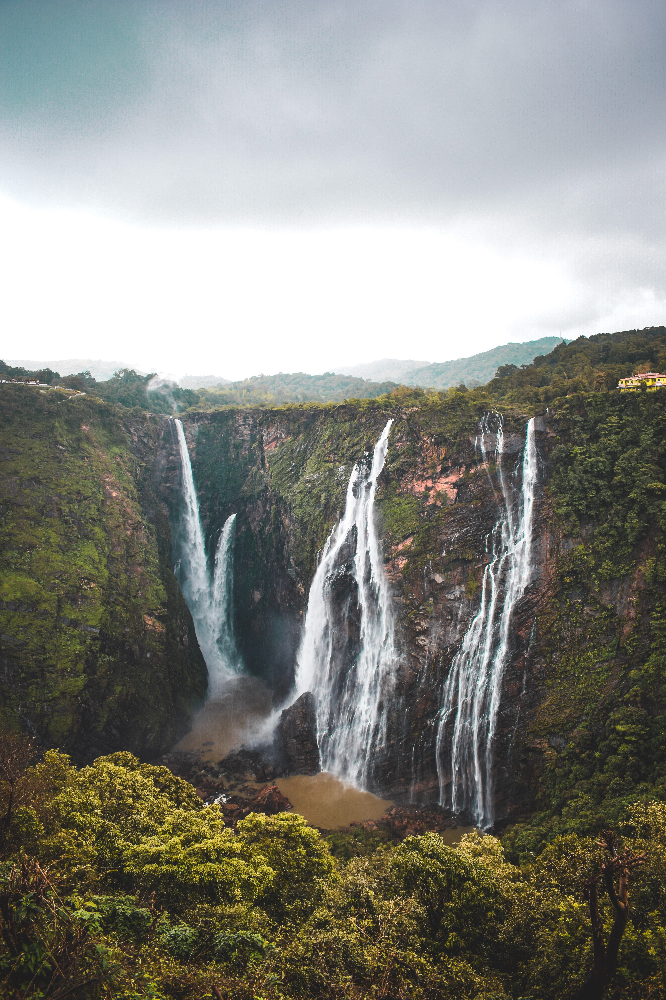

Jog Falls is created by the Sharavati dropping 253 m (830 ft), making it the third-highest waterfall in India after the Nohkalikai Falls with a drop of 335 m (1,099 ft) in Meghalaya and the Dudhsagar Falls with a drop of 310 m (1,020 ft) in Goa.
Sharavathi, a river which rises at Ambutirtha, next to Nonabur, in the Thirthahalli taluk takes a northwesterly course by Fatte petta, receives the Haridravati on the right below Pattaguppe and the Yenne Hole on the left above Barangi. Then, it bends to the west, precipitates itself down the Jog Falls (aka Gersoppa Falls), and passes the village of Gersoppa (properly Geru-Sappe), which is some 30 kilometres (19 mi) away, discharging into the Arabian Sea at Honnavar in Uttara Kannada.
The Sharavathi, flowing over a very rocky bed about 250 yards (230 m) wide, reaches a tremendous chasm, 290 m (950 ft) deep, and the water comes down in four distinct falls, Raja, Rani, Roarer and Rocket. The Raja Fall comes down in one unbroken column sheer to the depth of 250 m (830 ft). Halfway down, it is encountered by the Roarer, which precipitates itself into a vast cup and then rushes violently downwards to meet the Raja. The Rocket shoots downwards in a series of jets. The Rani moves quietly over the mountainside in a sheet of foam. The Tourism Department has built steps from the viewpoint at the top, where the waterfall can be seen from across, to the bottom of the hill. There are approximately 1,400 steps made to reach the bottom of the hill.
The hydro-electric project was conceived by the government of Mysore in mid-1943. A scheme to generate 64,000 horsepower at a cost of ₹358 lakh was designed. The Power House on the right bank of the Gerusoppa dam consists of four Francis-type turbines coupled to the generating units of 60 MW each. The units are configured to operate at a design head of 47.5 mtrs. An outdoor switchyard is located between the toe of the dam and the power house. Power from the outdoor yard is evacuated through a 220 KV double circuit transmission line connected to the state grid at Talaguppa.
